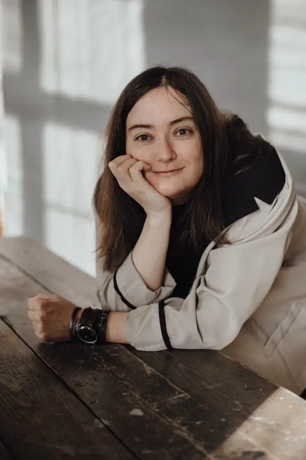

Всё понимаю, а внутри ничего не сдвигается
Можно знать причины, видеть свои закономерности и всё равно снова попадать в то же состояние. Как будто понимание есть, а внутри всё осталось по-прежнему.
Психолог и супервизор
Можно очень хорошо понимать, почему вам плохо, и всё равно чувствовать, что внутри ничего толком не изменилось. И тело реагирует, и эмоции накрывают, и старые реакции снова появляются.
На консультации разбираемся, какие чувства, потребности и внутренние конфликты стоят за реакцией, чего когда-то не хватило и какие выводы пришлось сделать о себе, других и своих возможностях. Часто работаем не только разговором, но и через образы и телесные ощущения.
Мне важно, чтобы работа не заканчивалась на объяснении причин. Мы вместе с вами смотрим, что поддерживает реакцию сейчас, чего вам в этом не хватает и что должно измениться, чтобы изменилась и сама реакция.
С чем можно прийти
Можно знать причины, видеть свои закономерности и всё равно снова попадать в то же состояние. Как будто понимание есть, а внутри всё осталось по-прежнему.
Тревога, злость, стыд, вина, страх или обида захватывают настолько, что трудно с ними что-то делать. Или вы долго держите всё внутри, а тело начинает реагировать: болит голова, сводит плечи, сбивается сон, беспокоит живот, колотится сердце - особенно после разговоров, событий или нагрузок.
Есть диагноз или устойчивое телесное состояние, и хочется понять, какую роль в нём играют стресс, чувства, отношения и внутренние конфликты. С этой частью можно работать параллельно с медицинским наблюдением и лечением.
Про работу с телесными симптомами →Одна часть хочет изменений, другая будто удерживает всё как есть. Это может проявляться в отношениях: трудно сказать «нет», попросить о помощи, подпустить ближе или, наоборот, не растворяться в другом.
Ситуация изменилась, отношения закончились, опасности больше нет, а тело и эмоции всё ещё реагируют так, будто происходящее продолжается.
Для кого
Работаю со взрослыми с 18 лет, индивидуально.
Не работаю с зависимостями в активной фазе, с детьми и подростками, парами и семьями.

Обо мне
Психолог и супервизор
До психологии я занималась микробиологией, потом работала специалистом и руководителем. И в психологию принесла с собой привычку проверять гипотезы, а не влюбляться в первое красивое объяснение.
Мне мало ответа «это от стресса». Важно понять, что именно происходит с конкретным человеком: как связаны его история, чувства, тело, отношения и привычные способы справляться, и какие физиологические факторы могут на это влиять.
Не держусь за один метод. Важная часть моей работы - эмоционально-образная терапия (ЭОТ): образы помогают исследовать внутреннюю реальность, чувства, старые решения и то, как человек когда-то приспособился к происходящему. Использую также ориентированную на решение краткосрочную терапию (ОРКТ) и инструменты когнитивно-поведенческой терапии (КПТ), когда они подходят к задаче. Работа не сводится к коррекции мыслей и поведения.
Если реакция держится годами, сначала разбираемся, что её поддерживает: от чего она защищает, какие потребности за ней стоят, чего не хватает и какой внутренний конфликт с ней связан. А потом работаем с этим так, чтобы менялась не только сама реакция, но и то, из чего она выросла.
Как я работаю
Сначала разбираемся, что с вами происходит. Потом идём глубже и работаем уже там: с чувствами, образами, телесными ощущениями, внутренними конфликтами и старыми решениями. Так меняется не только понимание, но и сама реакция.
Что вы чувствуете, чего боитесь или хотите, что происходит в теле, какие образы приходят и где возникает внутренний конфликт. Отдельно смотрим, какие потребности когда-то остались без ответа и какие решения пришлось принять, чтобы справляться.
Образы и телесные ощущения помогают работать с прошлым опытом, который продолжает вызывать привычные чувства и телесные реакции, даже когда головой уже понятно, откуда всё взялось. В работе меняется не прошлое, а то, как оно переживается сейчас и какую реакцию вызывает.
Если когда-то выбора было мало, в работе можно возвращать себе то, чего тогда не хватало: защиту, поддержку, право хотеть, злиться, отказываться, просить и действовать. И уже из этого принимать другие решения и по-другому переживать похожие ситуации сейчас.
Если моя гипотеза не сходится с вашей историей, меняем гипотезу, а не вашу историю.
В работе мне важен живой человек - вы. Ваша история, ваш опыт и то, что я могу сделать для вас. У меня много методов и инструментов, и все они подчиняются одному - вашим задачам.Если вопрос связан с телом
Стресс действительно может влиять на тело. Я работаю в том числе с психосоматикой. Но фраза «это от нервов» сама по себе почти ничего не объясняет.
Смотрим, когда появился симптом, в каких ситуациях он усиливается, что в это время происходит в жизни, чувствах и отношениях и что уже известно о здоровье. У телесного симптома могут одновременно быть физиологические и психологические факторы. Поэтому я не пытаюсь заранее решить, что симптом «от нервов», но и не исключаю психологическую составляющую только потому, что он телесный.
Если по ходу работы появляется что-то, что имеет смысл дополнительно проверить с врачом, я скажу об этом. Это не отменяет психологическую работу: при необходимости медицинская и психологическая части могут идти параллельно.
Собрала отдельную страницу: как исследовать симптом, на что смотреть и какие практики можно попробовать самостоятельно.
Подробнее о том, как я работаю с психосоматикой →Одна встреча
У встречи есть каркас, но работа не сводится к разговору по пунктам. Иногда мы подробно разбираем происходящее словами, иногда переходим к образам, телесным ощущениям и тому, что обнаруживается уже по ходу работы.
Несколько слов о состоянии, последних событиях и о том, что сейчас больше всего занимает.
Иногда запрос уже понятен. Иногда сначала разбираемся, что именно сейчас беспокоит и с чем хочется поработать.
Это может быть разговор, работа с образом, телесным ощущением, внутренним конфликтом, старым решением или частью опыта, которая до сих пор живёт так, будто выбора нет.
Отмечаем, что стало понятнее, что теперь ощущается иначе, какие новые решения или возможности появились и на чём сегодня имеет смысл остановиться.
Формат
Можно прийти на одну консультацию и после неё решить, есть ли смысл продолжать.
Zoom, 55–60 минут
район м. Краснопресненская, 55 минут
Принимаю оплату из России и из-за рубежа. Для зарубежных клиентов способ оплаты уточняем при записи.
Написать и выбрать времяОбразование
Психология
3 уровня обучения
3 уровня обучения в рамках ЭОТ
Повышение квалификации
Дипломированный супервизор
Организационная психология - очно-заочная форма. Планируемый выпуск - 2027
Telegram
В канале я пишу подробнее о психологии, теле, исследованиях и спорных идеях. Там проще понять мой способ думать и работать, чем по списку методов.
Условия работы
Здесь собраны условия записи, оплаты и переноса встреч, а также другие организационные подробности.
Для записи на консультацию или супервизию напишите мне в Telegram. Я предложу варианты времени, и после подтверждения время закрепляется за вами. Для онлайн-встречи нужен стабильный интернет, камера и возможность спокойно разговаривать.
Если встречу нужно перенести или отменить, пожалуйста, напишите как можно раньше, желательно не меньше чем за 24 часа. При отказе от ещё не оказанной встречи оплачиваются только фактически понесённые расходы, если они возникли. Для очной встречи это может быть невозвратная аренда кабинета.
Оплата после встречи. Принимаю оплату из России и из-за рубежа. После оплаты отправляю чек. Работаю с юридическими лицами.
Я тоже стараюсь предупреждать о переносе не меньше чем за 24 часа. Если переношу позже, следующая встреча для вас бесплатная.
На сайте нет форм записи, личного кабинета, аналитики и рекламных cookie. Для записи вы сами переходите в Telegram или пишете на почту. Отдельную базу клиентских анкет, электронные медицинские карты и аудио- или видеозаписи сессий я не веду. Для записи не нужно присылать диагнозы или подробные сведения о здоровье.
Психологическая консультация не является медицинской услугой и не заменяет медицинскую диагностику, лечение или психиатрическую помощь.
Эти договорённости не ограничивают права клиента, предусмотренные законодательством РФ.
Коротко напишите, с чем хотите прийти, и какой формат вам подходит - онлайн или очно. Я предложу варианты времени.
Можно также написать на v.sukhareva@gmail.com
Для психологов
Разбор клиентского случая, рабочих гипотез, трудных мест в процессе и собственных реакций в работе с клиентом.